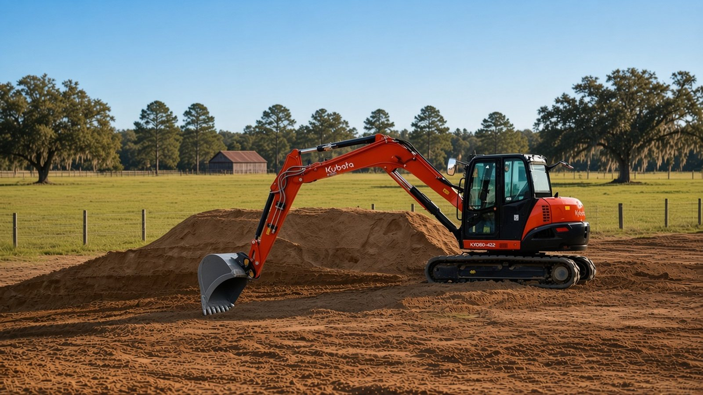
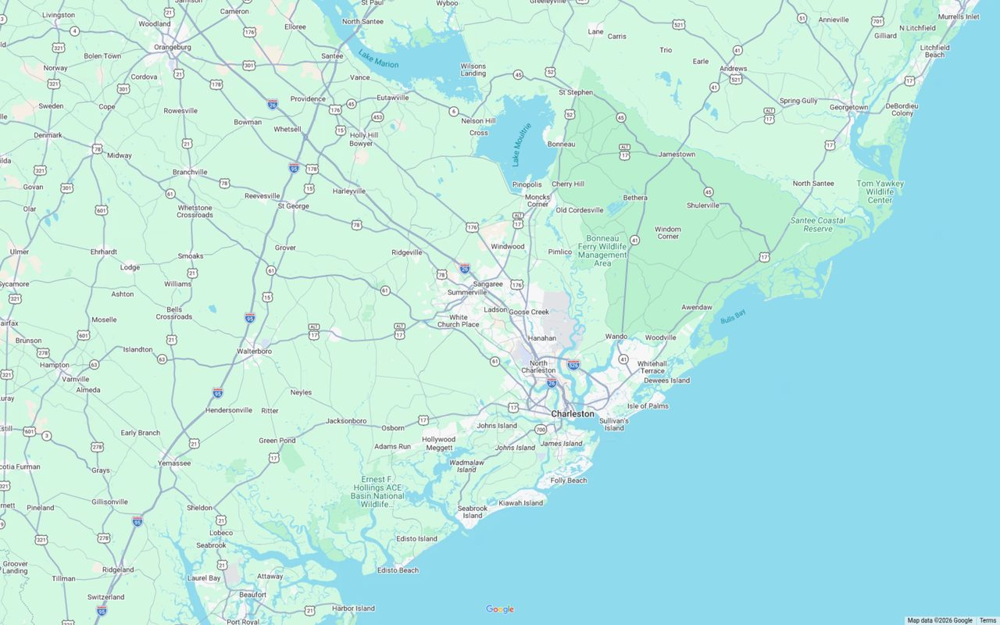

Excavation
Digging and removing earth for foundations, utilities, and other below-grade work.
The Charleston Tri-County area
T. C. Dirtworks is a full-service excavation company with nearly a decade of earth-moving experience.

Local
Charleston Tri-County area
Charleston, Berkeley, and Dorchester counties.
Experience
Nearly a decade
Earthworks experience.
Estimates
Free estimates
Services
T. C. Dirtworks takes on excavation and the site work that goes with it, across the Charleston Tri-County area.
Digging and removing earth for foundations, utilities, and other below-grade work.
Shaping soil to the elevations a site needs, including leveling and sloping the ground.
Removing trees, brush, and surface debris so a piece of ground can be worked.
Getting a property ready for construction, from clearing through rough shaping of the site.
Moving water off a property with grading, swales, ditches, or pipe.
Opening trenches for utilities, footings, and drainage lines.
Taking down structures and clearing the material that comes out of that work.
Loading and transporting soil, debris, and other materials to or from a job.
Building or rebuilding a driveway, including grading and placing base material.
How it works
Call or send the form. Share enough about the job for T. C. Dirtworks to price it.
01
Call or use the form. Include the job site, the service you need, and how you prefer to be reached.
02
The details go to T. C. Dirtworks so the work can be estimated.
03
T. C. Dirtworks strives for perfection on every job.
About
T. C. Dirtworks is a full-service excavation company in Charleston, South Carolina, with nearly a decade of earth-moving experience.
Work covers excavation, grading, land clearing, site prep, drainage, trenching, demolition, hauling, and driveways for properties in the Charleston Tri-County area.
Company standard Strives for perfection on every job.
Gallery
Grading, site prep, and related earthwork in the Charleston Tri-County area.
Reviews
Tim did a fantastic job grading and spreading over 30 tons of stone for my driveway and a barn pad.
Service area
T. C. Dirtworks serves the Charleston Tri-County area: Charleston, Berkeley, and Dorchester counties. The business address is in Charleston.

Charleston Tri-County area, SC
Free Estimate
Send the job site, the service, and the way you prefer to be contacted. You can also call or email directly.
854-275-9644